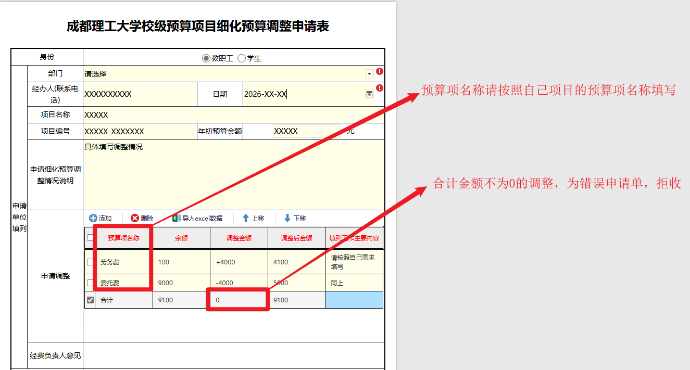

校级预算项目细化预算调整申请
事项编号：
| 办理方式 | 线下办理 | 事项性质 | 审批事项 |
| 办理途径 | 办理时间 | ||
| 咨询电话 | 暂无 | 监督电话 | 暂无 |
1.发起事项

暂无其他说明
- 服务人群：
- 研究生,学校管理员,教师,兼职教师,学生
- 所属部门：
- 财务处
- 服务日期：
- 长期有效
办理入口
校级预算项目细化预算调整申请
校级预算项目细化预算调整申请
| 办理方式 | 线下办理 | 事项性质 | 审批事项 |
| 办理途径 | 办理时间 | ||
| 咨询电话 | 暂无 | 监督电话 | 暂无 |
1.发起事项

暂无其他说明
校级预算项目细化预算调整申请